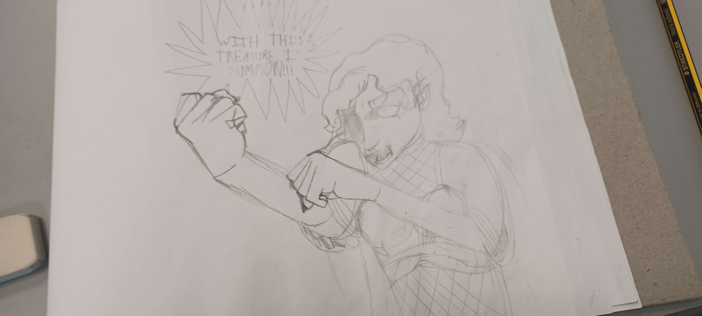
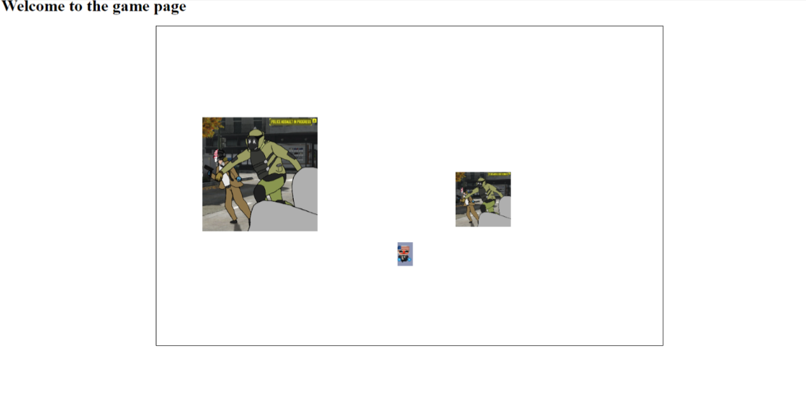

Portfolio
Art

Web Development
ToDo Website
outlook and habitica I developed a prototype using skills gathered from my second year of IDAD.
HCI Accessibilty and Usability Project
This was a project I did in my first year of IDAD in which I had to pick a website I was familiar with and then find out how accessible
the website was through testing and visuals and then placing my findings into html form using links and images and embedding videos.
the website was through testing and visuals and then placing my findings into html form using links and images and embedding videos.
Promotion Website
In this project I was tasked with making a promotional website using flex boxes and webms to try and improve our skills with those
specific skills. I ended up making a promotional website for a game I am very passionate about promoting its new season. We also were
tasked with uploading these websites to a specific domain so that we would be able to show them to our classmates
specific skills. I ended up making a promotional website for a game I am very passionate about promoting its new season. We also were
tasked with uploading these websites to a specific domain so that we would be able to show them to our classmates
Other Projects
UI Design Labs

These labs were to make progressive games using the canvas tool in html, this is an example of lab 5 where we had to make moving sprites
Critical Review Project
For this project I was tasked with taking an old website and redesigning it to make it more accessible and try to improve it
in whatever way I thought was better for the users.
in whatever way I thought was better for the users.
Socials